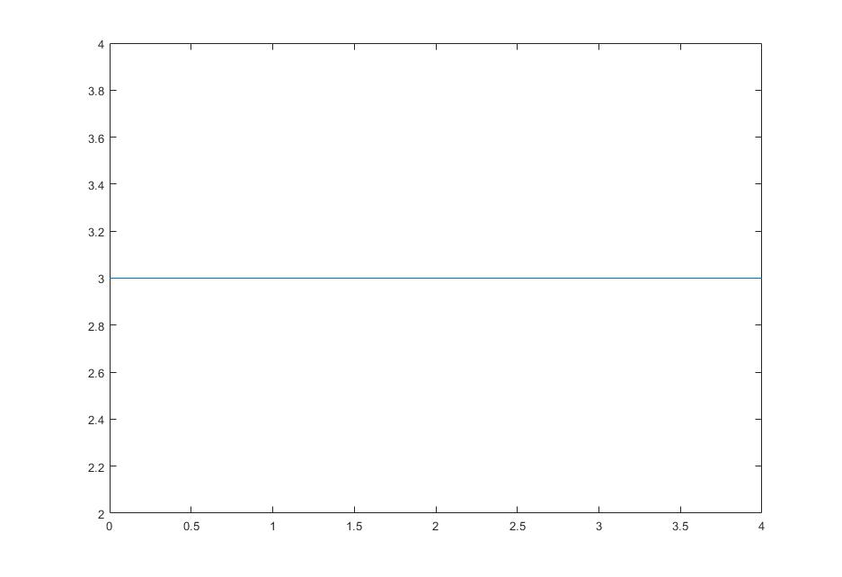
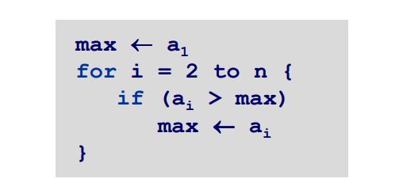
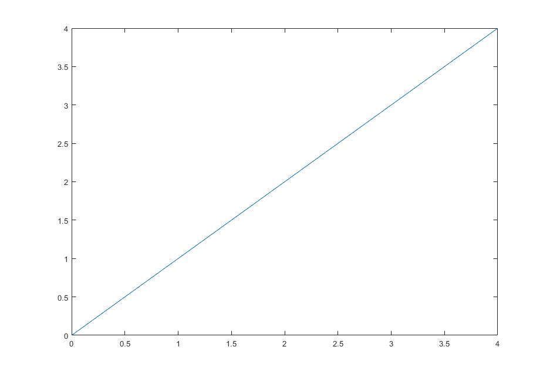
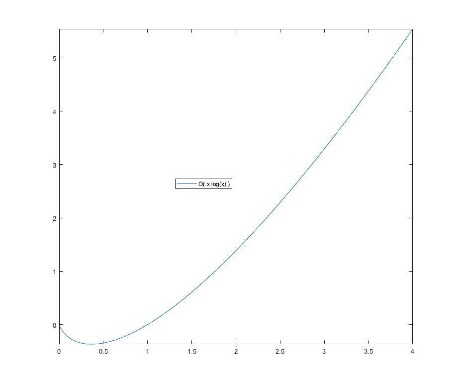
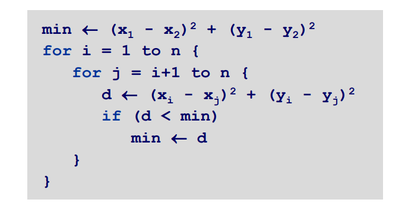

¿Que es un algoritmo?
Un algoritmo es una secuencia de instrucciones cuyo objetivo es la resolución de un problema. Siempre que se analiza y evalúa adecuadamente la efectividad de una solución, disminuye drásticamente el costo que representa su producción y mantenimiento, pues los recursos que se invierten posteriormente en codificación, pruebas y revisión es mucho menor siempre (como el tiempo, dinero y talento humano). A la idea del tiempo de ejecución se le conoce como complejidad temporal, y a la idea de la memoria requerida para resolver el problema se le denomina complejidad espacial. Dichos valores se encuentran en función del tamaño del problema (valor o valores dictados por el número de elementos con los que un algoritmo trabaja). El ritmo de crecimiento, es donde evaluaremos cómo crece el número de instrucciones necesarias para resolver el problema en función del tamaño del mismo.➢ Constante:O(1)
Es la más sencilla y siempre presenta un tiempo de ejecución constante ➢ Logaritmico:O(\log x)
Estos algoritmos indican que el tiempo es menor que el tamaño de los datos de entrada. Este algoritmo busca un elemento en un array ordenado dividiendo el array en 2 mitades, identifica en cual de las mitades se encuentra, luego divide esa parte en 2 mitades iguales y busca nuevamente hasta encontrar el elemento, es un algoritmo recursivo

➢ Lineal: O(n)
El tiempo crece linealmente mientras crece los datos.Tiempo de ejecución proporcional al tamaño de la entrada.
Ejemplo: Calcular el máximo de n números a1,…, an.  
➢ Enelogarítmico:O(n \log x)
Aparecen en muchos algoritmos recursivos p.ej. Estrategia “divide y vencerás” ➢ Cuadratico:O(n \log x)
Aparece cuando tenemos que enumerar todas las parejas posibles de elementos de un conjunto.Ejemplo: Dado un conjunto de puntos en el plano (x1,y1),..., (xn,...yn),encontrar la pareja más cercana 